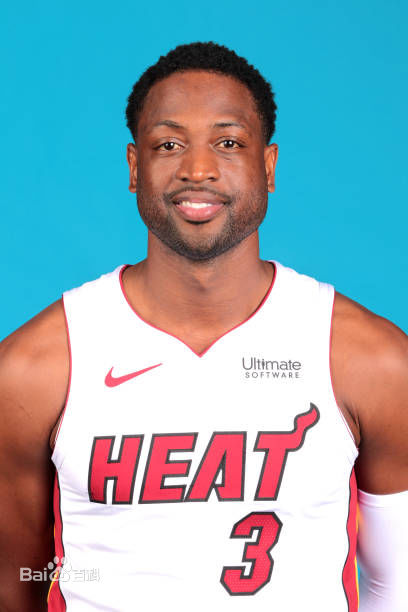

德怀恩·韦德（Dwyane Wade），1982年1月17日出生于美国伊利诺伊州芝加哥，美国职业篮球运动员，司职得分后卫，效力于NBA迈阿密热火队，绰号“闪电侠”（The Flash）。 德怀恩·韦德在2003年NBA选秀中于首轮第五顺位被迈阿密热火队选中，从而进入NBA。2006年，韦德夺得生涯第一座NBA总冠军，并且荣膺NBA历史上第五年轻总决赛MVP（FMVP）。2008年，韦德代表美国男篮夺得北京奥运会金牌。2011-14年间，韦德帮助热火队四次进入NBA总决赛，并在中间在2012-13年2个赛季取得连冠。职业生涯在2005-16年连续12次入选NBA全明星阵容并在2010年荣膺NBA全明星MVP，7次入选NBA最佳阵容（2次一阵，3次二阵，3次三阵），3次入选NBA最佳防守阵容二阵，2009年荣膺NBA得分王，2006-07年连续2次夺得NBA全明星技巧挑战赛冠军。 2017年9月27日，韦德与克利夫兰骑士队达成一份1年230万美元的合同协议。2018年2月9日，韦德重返热火队。2018年9月17日，韦德宣布以一年240万美元的合同续约热火队并在2018-19赛季后退役。 [1-2] 德怀恩·韦德擅长欧洲步，突破犀利，喜欢背身单打，年轻时是NBA联盟中运球过人速度最快的球员之一。

德怀恩·韦德从小生长于芝加哥的贫民区之中。他年纪还很小时父母亲就已经离异，随着父亲和继母一起住，韦德仍然和姊姊崔吉儿（Tragil Wade）拥有很好的关系。因为韦德生长在芝加哥因此非常崇拜芝加哥公牛队的篮球巨星迈克尔·乔丹。韦德的名字（first name）“Dwyane”是写错的，韦德曾解释是当年祖母在报户口的时候把韦德父亲的名给拼错所以继续用在韦德身上。
韦德高中就读于奥克朗哈罗德L.理查兹中学，是学校篮球队成员， [3] 但他没有获得太多的上场时间。而他的弟弟麦克丹尼尔却是球队的明星。 [4] 韦德在三年级遇上了Richards学校的助教Gary Adams。他提高了韦德的控球能力，及弧顶外侧的投篮能力，他每天跳投上百次。韦德的身体素质同样有了提高，长了接近4英寸。这一年他场均能拿下了20.7分和7.6个篮板。进入四年级，韦德在中西区的学校成为“抢手货”。马奎特大学, DePaul 和伊利诺斯州大都对他感兴趣。韦德几乎每场比赛都能取下两双，均场27分和11个篮板。球队战绩24胜5负。